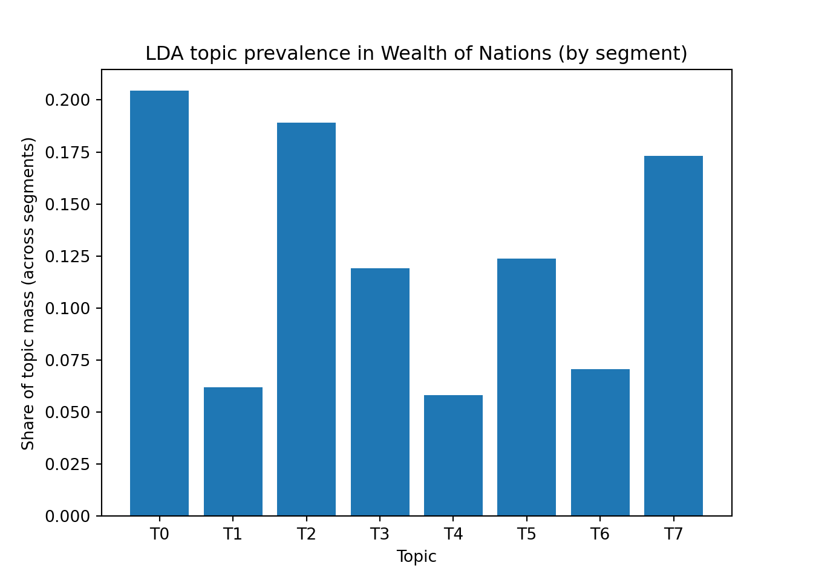
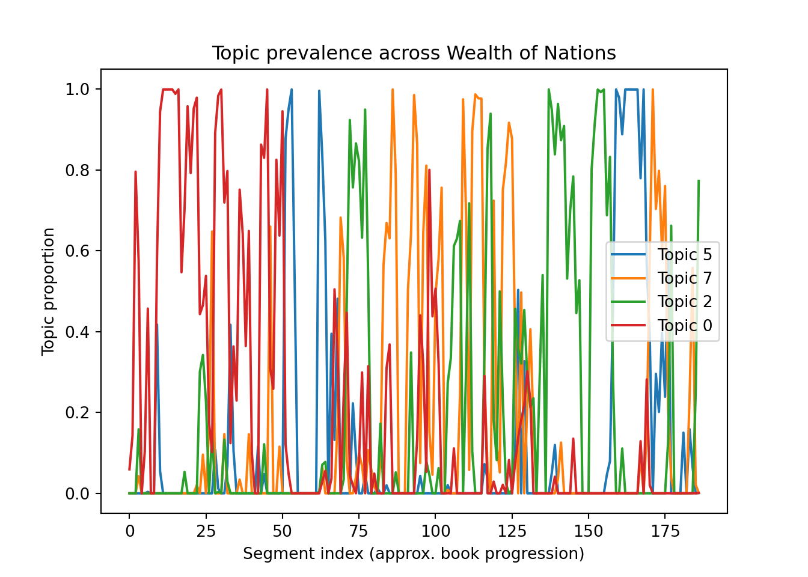

Before working with text in today’s tutorial, we are going to have an introduction to getting started in Python. This is for those of you who haven’t worked in Python before. Note: this doesn’t mean that you want to forget everything that you learned in R up to now! The analyses that we conducted in R allowed us to develop a granular understanding of how to represent and measure textual features. The tasks we will do in Python will be less “transparent”, but you don’t want to give up the intuition you developed so far.
If you have never worked with Python, you can find a beginner friendly, step by step guide on how to download Python and set up VS Code (the environment you will use for Python–think of it as the Python version of R studio): here.
If you have worked with Python before, you can use whichever environment you want.
Quick note: you want Python 3.11.x. The bottleneck is scikit-learn, which doesn’t play well with the most recent version of Python.
A second note about learning Python: If you are new to Python, the first thing that you will see as you look at tutorials is that Python is an object-oriented language. I have added a link that takes you to realpython.com, which is a great resource for learning Python. But don’t worry too much about understanding all the finer points of this from the get-go! The TA’s and I will help you use the code that I give you as an example and then you can start learning more about objects and classes and all that jazz.
As we go along this tutorial: I am re-introducing the training wheels. I am including links to some of the major Python concepts as they come up in the code!
Getting started: reading, tokenizing, and stop words
The first few steps that we are going to take are very similar to what we did in R: the logic is the same, but the syntax is different. The first thing that we need to do is to read the text and then check that things look correct!
In R, what we do at the beginning is:
load a text file into memory,
check how long it is,
preview the beginning,
and try to spot obvious encoding or OCR problems early (that is, does the text look weird?).
We are now going to do the same step in Python. The main difference is that we are going to use a path-handling tool in Python, Path. We are then going to actually read the file with this line: text = path.read_text(encoding="utf-8", errors="replace"). Here, I am asking Python to decode the text using utf-8 and to replace any unreadable characters instead of crashing. The replacement is the Unicode replacement character: �.
from pathlib import Pathpath = Path("texts/wealth.txt")text = path.read_text(encoding="utf-8", errors="replace")# The lines above read the wealth.txt into a long stringprint("Characters:", len(text)) #character count
Characters: 2411473
print("Lines:", text.count("\n") +1) #line count
Lines: 34544
# taking a look that the text looks ok. Similar to head() and slice() in Rprint("\n--- START ---\n")
--- START ---
print(text[:800])
An Inquiry into the Nature and Causes of the Wealth of Nations
by Adam Smith
Contents
INTRODUCTION AND PLAN OF THE WORK.
BOOK I. OF THE CAUSES OF IMPROVEMENT IN THE PRODUCTIVE
POWERS OF labor, AND OF THE ORDER ACCORDING TO WHICH ITS PRODUCE IS NATURALLY
DISTRIBUTED AMONG THE DIFFERENT RANKS OF THE PEOPLE.
CHAPTER I. OF THE DIVISION OF labor.
CHAPTER II. OF THE PRINCIPLE WHICH GIVES OCCASION TO THE
DIVISION OF labor.
CHAPTER III. THAT THE DIVISION OF labor IS LIMITED BY
THE EXTENT OF THE MARKET.
CHAPTER IV. OF THE ORIGIN AND USE OF MONEY.
CHAPTER V. OF THE REAL AND NOMINAL PRICE OF
COMMODITIES, OR OF THEIR PRICE IN labor, AND THEIR PRICE IN MONEY.
CHAPTER VI. OF THE COMPONENT PART OF THE PRICE OF COMMODITIES.
CHAPTER VII. OF THE NATURAL AND MARKET PRICE OF COMMODITIES.
CHA
Though there are in Europe indeed, a few towns which, in same respects,
deserve the name of free ports, there is no country which does so.
Holland, perhaps, approaches the nearest to this character of any, though
still very remote from it; and Holland, it is acknowledged, not only
derives its whole wealth, but a great part of its necessary subsistence,
from foreign trade.
There is another balance, indeed, which has already been explained, very
different from the balance of trade, and which, according as it happens to
be either favorable or unfavorable, necessarily occasions the prosperity
or decay of every nation. This is the balance of the annual produce and
consumption. If the exchangeable value of the annual produce, it has
The print() function is something that will come up over and over again. If you get lost by how I am using it, do click on this explanation.
The next step is to tokenize the text. This is the Python version of unnest_tokens() in tidytext. But in Python, we have to do this using a regex: so, hopefully, you feel comfortable with the regex unit from Week 2. We are also going to lowercase. This tokenizer keeps alphabetic words (and contractions), so it ignores numbers and hyphenated compounds; that’s a simplification for today, not a general rule.
Since we also want to run some checks on our process (as we did in R), we are going to inspect the most frequent tokens using Counter, the Python parallel to tidytext’s count(word, sort =TRUE).
Making things look nicer: You can skip this explanation, if you are new to Python. This is equivalent to: print(w, c). I am just trying to make the display more readable for the class!
In the next block below, I am going to use an f-string inside print(). An f-string is a way to format text, so f"{w:>12} {c}" means (working inside out):
take the value of w and convert it to text, right-align it inside a space 12 character wide;
then when you print separate the columns (the two spaces between {w:>12} and {c})
for w, c in counts.most_common(25):print(f"{w:>12}{c}")
the 32244
of 24295
to 11708
and 10284
in 9637
a 6678
it 5392
which 4824
is 4685
be 3828
that 3818
or 3211
as 3088
by 2981
for 2976
their 2523
this 2231
not 2231
are 2168
they 2131
have 2119
upon 2112
from 1970
but 1962
those 1925
The library Scikit-learn is going to allow us to import a standard list of stopwords. More importantly, Scikit-learn is a machine learning library for Python and we will use it more than once!
We are going to convert the list of pre-defined stopwords into a set because it will make filtering tokens more efficient. We can then use the in-place OR operator|= to add all the elements of our custom stopwords to the standard stopwords (the link at “sets” will also explain |=).
Aside: if you go to the tutorial, you might see that there is another OR operator| . This operator creates a new set. I am just modifying the preexisting one by adding the custom stopwords.
from sklearn.feature_extraction.text import ENGLISH_STOP_WORDSstopwords =set(ENGLISH_STOP_WORDS) #turn it into a set# This is optional and I am only using this as an example of syntax (hence the choice of silly terms)custom_stopwords = {"barnacle", "putine"}stopwords |= custom_stopwords# let's check how many stopwords we have and what they look likeprint("Stopwords loaded:", len(stopwords))
Now that we have our stopwords as we want them, we can apply it to our tokens. We are also going to remove really short tokens (fewer than 3 characters). Something that sometimes throws people off: I am stating the length requirement as a strict inequality. Now look at the code below: do you understand why have len(t) >= 3 ?
from collections import Counterclean_tokens = [t for t in tokens if t notin stopwords andlen(t) >=3]print("Tokens (raw):", len(tokens))
clean_counts = Counter(clean_tokens)print("\nTop 25 tokens after cleaning:")
Top 25 tokens after cleaning:
for w, c in clean_counts.most_common(25):print(f"{w:>12}{c}")
great 1583
price 1264
country 1240
greater 1085
labor 1011
trade 970
produce 945
different 855
quantity 797
value 794
people 779
money 773
land 720
revenue 691
silver 661
capital 657
time 636
stock 601
goods 585
market 582
countries 577
expense 561
particular 513
tax 513
gold 508
Segmenting the text and preparing for Word2Vec and LDA
So far, the steps should be very familiar (with a different coding language). The next step is driven by the model itself. Since LDA does not operate on individual words or on a continuous token stream, we are going to be constrained by the structure that it needs. Word2Vec can work on the entire Wealth of Nations at once, but for the sake of continuity, we will stick to the same structure for both models.
LDA needs to work with documents or, as in our case, pre-defined segments of a longer text. These are the assumptions behind LDA:
each document is a mixture of topics,
each topic is a distribution over words.
This forces us to decide what counts as a “document” in our corpus. In some cases, this will be obvious to you: if you have a collection of political speeches, then each speech is a document. In other cases, we have to make a decision. The Wealth of Nations is one long text and we can segment it in a number of ways. There are two common options (each with its one trade-offs): one is to use internal subdivisions, such as chapters; the other is to use fixed-sized segments. We are going to go for the second one and create 800-token chunks.
Note: both options are legitimate choices. I am picking fixed-sized segments because I know that the chapters in The Wealth of Nations are of varied length and that a single topic (such as labor or political economy) is split over several chapters. The approach I take here also ensures that no single segment dominates the model simply because of its length. LDA tends to work better when documents are not extremely long. But this choice comes with a trade-off: I am losing track of Adam Smith’s structure. For different purposes (that is, for an actual project rather than a class tutorial), I might choose to “chunk” by chapter instead.
# SegmentingSEGMENT_SIZE =800# fixed-size "document." We can always adjust length# slice the entire list of tokens from token #0 to the last token, breaking it into chunks of SEGMENT_SIZE.segments = [ clean_tokens[i:i+SEGMENT_SIZE] for i inrange(0, len(clean_tokens), SEGMENT_SIZE)]#inspect the segmentationprint("Number of segments:", len(segments))
Number of segments: 187
print("First segment length:", len(segments[0]))
First segment length: 800
print("Last segment length:", len(segments[-1]))
Last segment length: 117
Each segment is now a document for LDA: we have 186 segments, which is a good document count for LDA, and segment sizes are consistent (800; last shorter, which is what we expect). Note: I picked 800 somewhat arbitrarily, but it is meant to capture approximately 2-3 paragraphs per segment given what I know of Smith’s writing. Let’s see what word counts in a segment look like:
from collections import Countersegment_counts = [Counter(seg) for seg in segments]# check: top words in segment 0print("Top words in segment 0:")
Top words in segment 0:
for w, c in segment_counts[0].most_common(15):print(f"{w:>12}{c}")
chapter 33
labor 30
different 19
book 12
produce 11
division 11
employed 11
nations 10
society 10
number 10
work 9
stock 8
particular 8
people 7
great 7
This also looks reasonable for the opening of the book (chapter, book, division, labor, work, nations, society) and it means that we can proceed to the next step.
At this point, we now have two complementary representations of the same text:
segments: each segment is an ordered sequence of tokens
segment_counts: each segment is represented by word counts (bag-of-words)
We are going to need both representations, but for two different models. Word2Vec learns meaning from local context and word order, so it can work directly with segments. On the other hand, LDA ignores word order and models documents as mixtures of topics, so it requires a bag-of-words representation, which we will build explicitly in the next section.
We will begin with Word2Vec, because it extends ideas you have already encountered: a word’s meaning is shaped by the contexts in which it appears. For a good resource on understanding Word2Vec, see here. But, in short, instead of storing explicit co-occurrence counts, Word2Vec learns dense vectors for each word. These vectors are learned by optimizing a predictive task: given a word, predict its surrounding context (or vice versa). The result is a compressed, smoothed representation of the same information we previously counted directly.
OK, what does this mean in practice for us? Each segment is a sequence of tokens and Word2Vec slides a fixed-size context window across these sequences and learns vector representations that are good at predicting nearby words.
# Key step: Word2Vec trainingfrom gensim.models import Word2Vec w2v = Word2Vec( sentences=segments, # each segment is a list of tokens vector_size=100, # dimensionality window=5, # context window (parallel to your co-occurrence window) min_count=10, # ignore very rare words workers=4, # number of CPU cores for parallel processing sg=1# 1=skip-gram, 0=CBOW)print("Vocabulary size:", len(w2v.wv.key_to_index))
Vocabulary size: 2317
We have to make some choices when we train Word2Vec:
vector_size=100: each word is represented as a 100-dimensional vector (if we choose higher dimension, we capture more information about each word, but it’s slower and requires more text data). Common values in practice: 100-300. 100 is often the default.
window=5 matches what we did in our co-occurrence calculation.
min_count=10 keeps the vocab manageable (and its good for a class exercise). Note: the exact choice of 10 (instead of, say, 15 or 20) is based on trail and error. Given that we have 1,395 words in the vocabulary after filtering, I don’t want to be too agressive. For a larger and more varied corpus, I might go for 20.
Important: if you have an older machine and it’s freezing; change workers = 4 to 2 or even 1.
sg=1 (skip-gram) is usually better for capturing rarer, more specific relations.
Now that the model is trained, we can inspect its learned semantic space by asking for a word’s nearest neighbors. The goal is to use cosine similarity to find which word vectors are closest to a given/target word in the vector space. In this case, let’s look at “trade,” “labor,” “price,” “capital,” and “market” to see what kind of results we get.
quick aside if you haven’t worked in Python before: this is the first time we are defining a function using the def keyword.
# Nearest neighbors (cosine similarity)def show_neighbors(word, topn=10):if word notin w2v.wv:print(f"'{word}' not in vocabulary.")returnprint(f"\nNearest neighbors for '{word}':")for w, sim in w2v.wv.most_similar(word, topn=topn):print(f"{w:>12}{sim:.3f}")for target in ["trade", "labor", "price", "capital", "market"]: show_neighbors(target, topn=10)
For trade: the terms that we are getting indicate that Smith is using structural and institutional language in conjunction with this term. We have verbs like carrying, carried, and shipping (possibly used as a noun…), as well as structural qualifiers such as branches, returns, and direct. Some words are perhaps more surprising and would require more investigation (such as round).
For labor: there is a strong sign the model has learned labor as an activity embedded in the language of key economic activities, such as productive, distributed, enables, and, more obviously, but very reassuring, laborer and tools.
As an exercise for the students: what do you think of the neighbors for price, capital, and markets? Any surprises?
I think that at this point, it will be helpful to compare with the co-occurrence analysis we did last week. Let’s compute simple co-occurrence neighbors using the same as in week 6 (window = 5) and compare.
# Co-occurrence neighbors (window = 5)from collections import Counter, defaultdictWINDOW =5cooc = defaultdict(Counter)for seg in segments:for i, token inenumerate(seg): start =max(0, i - WINDOW) end =min(len(seg), i + WINDOW +1)for j inrange(start, end):if i != j and seg[j] != token: # otherwise "trade" will be the closest to "trade" etc. cooc[token][seg[j]] +=1def show_cooc_neighbors(word, topn=10):print(f"\nCo-occurrence neighbors for '{word}':")for w, c in cooc[word].most_common(topn):print(f"{w:>12}{c}")
Now we can look at them and compare with Word2Vec neighbors defined by cosine similarity:
for target in ["trade", "labor", "price"]: show_cooc_neighbors(target, topn=10)
Co-occurrence neighbors for 'trade':
foreign 192
great 164
capital 127
country 119
consumption 92
employed 82
greater 80
carried 70
monopoly 68
branches 67
Co-occurrence neighbors for 'labor':
produce 227
quantity 216
wages 202
price 193
land 161
greater 139
stock 122
value 122
productive 120
country 119
Co-occurrence neighbors for 'price':
market 200
labor 193
money 158
corn 142
real 116
rise 106
commodities 104
high 101
quantity 94
produce 90
What differences do you note in these lists? Both represent “neighbors” of our target words, but obtain through two different methods.
LDA Topic Modeling:
Up to this point, we have used Word2Vec to explore how individual words relate to one another based on shared contexts. This approach is well suited to questions like:
Which words behave similarly across the text? How is a concept used, qualified, or framed?
This is really helpful if you are trying to think about how, for example, different texts portray the same terminology and concepts. But what if we want to focus on the text as a whole instead? This is the question that topic models—and LDA in particular—are designed to answer.
Some background on LDA:
In class, we briefly discussed the Dirichlet distribution. I emphasized that you don’t need to know the details in the background in order to actually work with LDA topic modeling. However, you do need to understand some basics about distributions so as to develop some intuition. First, if you need a clear and to the point reminder of binomial distributions, look at Josh Starmer’s youtube channel [he is a faculty member at UNC; not a random channel]. If you want a more robust discussion, see Peter Dalgaard, Introductory Statistics with R (2008), chapter 3 [statistics applications is one of the reasons I started the semester with R]. Once you are comfortable with that, use the discussion in chapter 6 of Text as Data for Dirichlet distribution (or take it on faith for now!).
With that behind us, the next step that we are going to do is the parallel to creating a DFM, but we have to organize our text into the data structure required by LDA. We already have segments and segment_counts, we need a dictionary (this is a key data structure in Python, follow the link if you are unfamiliar with it) and a document-term matrix (DTM). LDA works with a “bag-of-words” representation, so we need to get word counts for each segment. This should be very familiar for our work in R.
In the code below, Dictionary builds a vocabulary from our corpus and creates a mapping between each unique word (like “trade”) and a unique integer ID (assigned sequentially, in the order that new words are first encountered when gensim scans the corpus).
from gensim.corpora import Dictionary# Build a dictionary from the segmentsdictionary = Dictionary(segments)# do some cleaningdictionary.filter_extremes( no_below=10, # must appear in at least 10 segments no_above=0.5# must appear in no more than 50% of segments)print("Vocabulary size after filtering:", len(dictionary))
Vocabulary size after filtering: 1711
# Convert segments to bag-of-words formatcorpus = [dictionary.doc2bow(seg) for seg in segments]#Take a lookprint("First document (bow format):")
In the filtering step we are mirroring what we did in R when we removed very rare words and stopwords, but with a slightly different logic. Remember, we are trying to create topics and rare words in the corpus won’t really define a what the text is “about,” so we filter out words that appear in fewer than 10 segments by using no_below=10 (out of 186 segments). Conversely, really frequent words tend to be too general to distinguish topics, so we filter for words that appear in more than half of the segments using no_above=0.5. Note: both these values are heuristics that tend to work well for a first run of the model. But you might decide that, based on your question, you want to try different filters!
At this point, we have the same kind of data structure we relied on in R for bag-of-words models: documents represented by word counts. The next step will simply convert these counts into the specific input format required by the LDA implementation we are using.
We are finally done with preprocessing and we can actually fit the LDA model (yay!). To reiterate: these “topics” are computational constructs; they are estimates of latent word distributions that, taken together, explain the observed word counts reasonably well.
num_topics=8: small enough to read–it’s a good starting place
passes=10: this is how many times the model goes through the corpus during training. More passes will produce more stable topic estimates, but they take longer to compute. The size of your corpus matters here: with a small corpus, each document will carry a lot of weight and topic estimates are more sensitive to noise, so I will tend to do 10-15 passes. With a larger corpus, you can get away with fewer passes (5-10-ish) because the model encounters each word in more contexts. I don’t have a a clear cut rule because the answer also depends on: “how much time and GPU to you have?”
A nuanced point: the model also has a default number of iterations that we are not changing. Iterations are different from passes. The iterations control how thoroughly the model updates its estimates during each visit: these are the internal optimization steps that occur during each pass.
When we train an LDA model, we are not only choosing how many topics to use. We are also choosing “how flexible” the model is in assigning topics to documents and words to topics
alpha="auto": the alpha setting governs the document-topic distribution. That is, does the model assume that documents (segments in our case) tend to focus on one or fewer topics (low alpha) or does it assume that they contain a mix of many topics (higher alpha)? When we set it to "auto", we allow the model to learn this behavior from the data. I chose "auto" because we created arbitrary segments in the text based on a pre-selected number of tokens. If I had a different corpus, I would have to think more about alpha.
What does this mean? In gensim‘s LDA implementation, the default setting for the alpha parameter is ’symmetric’. This means that alpha has the same value for all topics. When alpha is symmetric, gensim calculates it using this formula: \(\alpha\) = 1.0 / number of topics. When I say that based on the structure of the corpus, I would have to think about it more, I mean this quite literally: I will base my decisions on the exact question that I am asking with topic modelling and the details of the corpus.
eta="auto": you can think of this setting as, how “chatty” do we want our topics to be? A low eta encourages topics to focus on fewer words, while a high eta encourages more words per topic. I usually select auto as it allows the model to infer how sharp (fewer words) topics should be based on the actual distribution of words in the corpus. In technical literature, you will find this parameter denoted by \(\beta\).
random_state: this will probably seem the most opaque setting. It fixes the sequence of random choices the model makes during initialization. This is a step for reproducibility and transparency. The goal is to be able to obtain the same output from run to run, but [flashing warning light, sirens blaring, warning, warning] only in the case that for each run you have the same corpus, the same preprocessing, the all same hyperparamaters settings, the same software versions (!), and the same hardware behavior. We do what we can to be as transparent as possible. Sometimes, life has other plans.
For more information on all the hyperparameters in gensim’s LDA follow the link. If you really want to dig further into this topic, I strongly recommend this paper.
At the end of the day: LDA results depend on modeling choices and random initialization. Different runs can produce different, but equally reasonable, topic structures.
OK, we can finally enjoy the fruits of our labor. Let’s inspect the topics:
for topic_id inrange(lda.num_topics):print(f"\nTopic {topic_id}:")for word, weight in lda.show_topic(topic_id, topn=12):print(f"{word:>12}{weight:.3f}")
Topic 0:
corn 0.020
wages 0.016
rent 0.010
demand 0.008
profits 0.007
work 0.007
rate 0.006
rise 0.006
improvement 0.006
high 0.006
cattle 0.005
average 0.005
Topic 1:
bank 0.043
paper 0.019
cent 0.017
gold 0.015
silver 0.013
circulation 0.012
sum 0.012
bills 0.010
notes 0.009
credit 0.009
pounds 0.008
banks 0.008
Topic 2:
company 0.010
government 0.009
colonies 0.008
established 0.006
sovereign 0.006
commerce 0.006
authority 0.006
clergy 0.005
law 0.005
church 0.005
empire 0.005
society 0.005
Topic 3:
silver 0.043
gold 0.034
coin 0.014
metals 0.012
mines 0.011
foreign 0.009
exchange 0.009
commodities 0.008
east 0.008
purchase 0.007
annual 0.007
standard 0.006
Topic 4:
debt 0.017
war 0.013
britain 0.011
new 0.009
government 0.009
fund 0.008
taxes 0.008
debts 0.008
millions 0.007
chapter 0.007
private 0.006
peace 0.006
Topic 5:
tax 0.034
rent 0.026
taxes 0.015
annual 0.008
productive 0.007
landlord 0.007
society 0.007
houses 0.006
consumption 0.006
fall 0.006
profits 0.006
lands 0.006
Topic 6:
ancient 0.011
education 0.011
men 0.009
society 0.009
life 0.007
army 0.006
authority 0.006
war 0.006
standing 0.006
body 0.006
exercises 0.006
military 0.006
Topic 7:
foreign 0.019
duties 0.014
britain 0.013
home 0.013
exportation 0.012
importation 0.010
consumption 0.009
colonies 0.009
bounty 0.009
monopoly 0.007
duty 0.007
manufactures 0.007
# After training, inspect learned alpha valuesprint("Learned alpha values:", lda.alpha)
And let’s visualize them with a bar plot that gives us a representation of the topic prevalence across segments:
import numpy as npimport matplotlib.pyplot as pltK = lda.num_topicstopic_mass = np.zeros(K)# Sum topic probabilities over all segmentsfor bow in corpus: doc_topics = lda.get_document_topics(bow, minimum_probability=0)for k, p in doc_topics: topic_mass[k] += p# Normalize to proportions (so bars sum to 1)topic_share = topic_mass / topic_mass.sum()# Plotplt.figure()plt.bar(range(K), topic_share)plt.xticks(range(K), [f"T{k}"for k inrange(K)])
([<matplotlib.axis.XTick object at 0x000001E5D116AC90>, <matplotlib.axis.XTick object at 0x000001E5D1646E90>, <matplotlib.axis.XTick object at 0x000001E5D16AB390>, <matplotlib.axis.XTick object at 0x000001E5D16BD810>, <matplotlib.axis.XTick object at 0x000001E5D16AA590>, <matplotlib.axis.XTick object at 0x000001E5D16AD2D0>, <matplotlib.axis.XTick object at 0x000001E5D16AF690>, <matplotlib.axis.XTick object at 0x000001E5D16C1AD0>], [Text(0, 0, 'T0'), Text(1, 0, 'T1'), Text(2, 0, 'T2'), Text(3, 0, 'T3'), Text(4, 0, 'T4'), Text(5, 0, 'T5'), Text(6, 0, 'T6'), Text(7, 0, 'T7')])
plt.ylabel("Share of topic mass (across segments)")plt.xlabel("Topic")plt.title("LDA topic prevalence in Wealth of Nations (by segment)")plt.show()

# Print the numeric values too (useful for interpretation)for k, s inenumerate(topic_share):print(f"Topic {k}: {s:.3f}")
Each bar shows the average proportion of that topic across all your 186 segments—i.e., which themes are most prevalent in the book under your segmentation choice.
One more visualization: topic prevalence by segment. This makes the structure of The Wealth of Nations visible.
import numpy as npimport matplotlib.pyplot as plt# Get per-segment topic distributionsdoc_topic_matrix = np.array([ [p for _, p in lda.get_document_topics(bow, minimum_probability=0)]for bow in corpus])plt.figure()# Plot only the top 4 topics by overall prevalence (less clutter)top_topics = np.argsort(topic_share)[-4:]for k in top_topics: plt.plot(doc_topic_matrix[:, k], label=f"Topic {k}")plt.xlabel("Segment index (approx. book progression)")plt.ylabel("Topic proportion")plt.title("Topic prevalence across Wealth of Nations")plt.legend()plt.show()

Final considerations and bringing things together:
The eight topics our model identified capture distinct but overlapping themes in The Wealth of Nations. Topic 2 (foreign trade and manufactures) and Topic 6 (precious metals and banking) emerge as the most prevalent, together accounting for over a third of the book’s content. This makes sense given Smith’s focus on international commerce and monetary systems. Topic 1 clearly represents taxation and fiscal policy (tax, taxes, duties, Britain), while Topic 3 captures discussions of war, military spending, and colonial companies—particularly the East India Company. Topics 0 and 4 both relate to labor and wages, but Topic 0 emphasizes the relationship between landlords, rent, and maintenance, while Topic 4 focuses more directly on wage rates, employment, and labor markets. Topic 5 centers on agricultural commodities and their prices over time (corn, wheat, cattle, century, improvement), likely reflecting Smith’s extended discussions of agricultural economics and historical price movements. The distribution of topic prevalence tells us something important (and reassuring given what is known about Smith’s work): Smith doesn’t devote equal attention to all themes—international trade and monetary systems clearly dominate his analysis.
As we look at the visualization, we can perhaps get a better sense of some of the structural distribution of these topics. The topic prevalence plot across segments reveals the book’s structure and confirms that LDA has captured meaningful thematic shifts as Smith moves through his argument. Notice how Topic 2 (foreign trade) shows strong presence in the middle and later portions of the book, which aligns with Smith’s extended treatment of commercial policy in Books IV and V. Topic 6 (metals and banking) appears in concentrated bursts rather than being evenly distributed, suggesting Smith returns to monetary questions at specific points in his argument. Topic 3 (war and colonies) is relatively rare overall but spikes sharply in specific segments—these likely correspond to his discussions of colonial administration and military expenditure. The uneven distribution of topics across segments is exactly what we should expect from a structured argument: Smith isn’t randomly mixing concepts and arguments, he’s developing them systematically. If all topics appeared uniformly across all segments, it would suggest either that our segmentation strategy failed to capture the book’s organization, or that LDA wasn’t identifying meaningful thematic distinctions. Instead, the clear peaks and valleys should give us some reassurance that both our preprocessing choices and the model’s topic assignments are capturing real patterns in how Smith structured his economic treatise